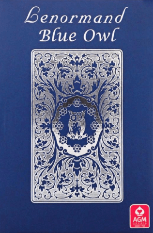

传统雷诺曼 · AGM-Urania
Blue Owl 雷诺曼
传统
民艺风
附诗句
古典
价格亲民
最受欢迎的传统雷诺曼牌组——19 世纪的德国经典设计， 由 AGM-Urania 印制，牌面附有诗句， 那种朴素的民艺气质，一百多年来 一直定义着雷诺曼的样子。

说起雷诺曼，大多数人脑海里浮现的就是 Blue Owl。 它源自一套 19 世纪的德国设计——小开本的印刷牌， 角上嵌着迷你扑克牌，配一小段押韵的诗句—— 几十年来由 AGM-Urania（这家瑞士德语区的老牌出版社， 手里有不少传统占卜牌组）持续印制。 在市面上所有牌组里，它最当得起德国与东欧 雷诺曼传统「实战用牌」这个称呼。
名字来自牌背：蓝底暗纹上印着一只小小的蓝色猫头鹰， 一开盒就认得出来。而牌面正面除了符号、编号、 嵌入的扑克牌和一小段诗句之外， 没有任何多余装饰——这恰恰是它的用意所在。
插图是平涂的民艺风，衬在柔和的米白底上—— 骑士骑在马上，船行在浪间，树独自立着。 线条简单，色彩克制，没有绘制的背景， 也没有氛围铺陈。每张牌本质上就是一个贴了标签的符号， 和 19 世纪初它们作为儿童客厅游戏牌被印出来时 一模一样。现代画风雷诺曼忙着搭建场景， Blue Owl 只把那个名词摆给你看，剩下的句子相信你自己会读。
每张牌还带一小段诗——多数版本是四行德语韵文， 英文版会把诗译在牌面上，或者放进随附的小册子里。 这些诗句是这副牌历史性格的一部分， 尽管今天大多数解读者并不会真的拿它们来断牌。
严格的传统 36 张——骑士、幸运草、船、房屋， 一路到十字架，编号是古典编号，扑克牌对应也是标准的那一套。 没有额外的牌，没有备选版本，没有现代增补。 这副牌是一条干净的基线，两张牌的组合、成行解读、 大牌阵，全都和书上写的完全对得上。
Blue Owl 是最常被推荐给认真学雷诺曼的人的牌组。 如果你想按这套系统一百多年来真正被使用的方式去学—— 想对着 Andrews、Treppner 或 Pace 的书研读， 或者想贴着欧洲传统走——那么它就是和书本最对得上的那副牌。 德语区的解读者也大多在用它， 所以它带着一种画风牌组难以企及的近乎正统的权威感。
但如果你希望牌面在视觉上有沉浸感， 它就不是那么理想的选择了。画面的朴素是刻意的， 而这份朴素放在 Gilded Reverie 这类牌组旁边，会显得相当素净。 如果你在意氛围，不妨把 Blue Owl 和一副更华丽的牌搭配着用， 各取所长——Blue Owl 用来研读，画风牌组用来日常抽牌。
目前由 AGM-Urania 在售（有时会挂 Königsfurt-Urania 的品牌），身心灵与塔罗类零售商普遍有货。 它是市面上最便宜的雷诺曼牌组之一—— 历来是实战解读者的用牌，定价也一直如此。 英文版在网上很好找；德语原版同样容易买到， 如果你更想拿到最初那批读者手中的模样，可以直接买德语版。